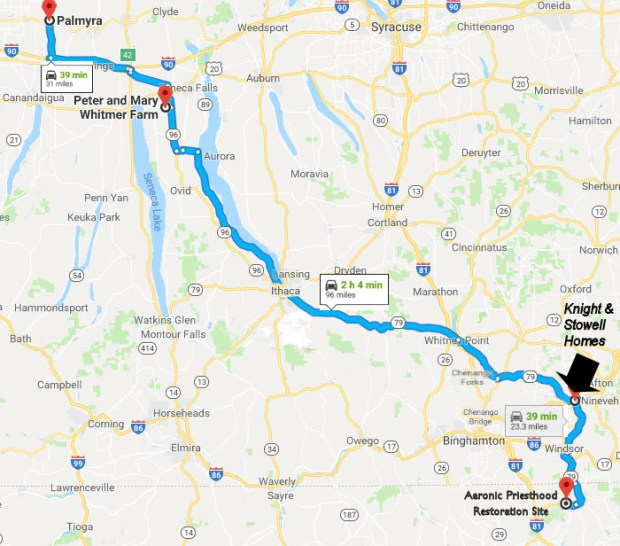
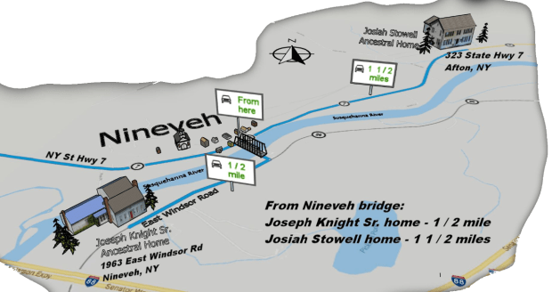

1963 E Windsor Rd, Nineveh, NY 13813
GPS: 42.187181, -75.605549
323 State Highway 7, Afton, NY 13730
GPS: 42.210317, -75.585171
Note: Some visitors have trouble getting driving directions to the above addresses. Use the GPS coordinates if needed.

